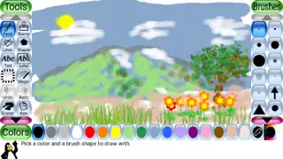
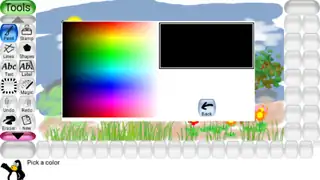

Tux Paint
صور وتصميم
Tux Paint is a free, award-winning drawing program for children ages 3 to 12 (for example, preschool and K-6). Tux Paint is used in schools around the world as a computer literacy drawing activity. It combines an easy-to-use interface, fun sound effects, and an encouraging cartoon mascot who guides
✓ ترخيص مفتوح (GPL-2.0-or-later) · آخر تحديث: 2025-06-01
0.9.35الإصدار
146.2 MBالحجم
GPL-2.0-or-laterالرخصة
Open in Kanzتحميل APK (146.2 MB)
Download APK
SHA-256: 0834a371444b62be6d7c776a43994f7ab603367eb7d5b55d2847b2de7896ce3f


امسح الكود لفتح صفحة التطبيق
Scan to open this app page
لو كنز مش متثبت عندك: نزّل متجر كنز.
Not installed? Get the Kanz store.